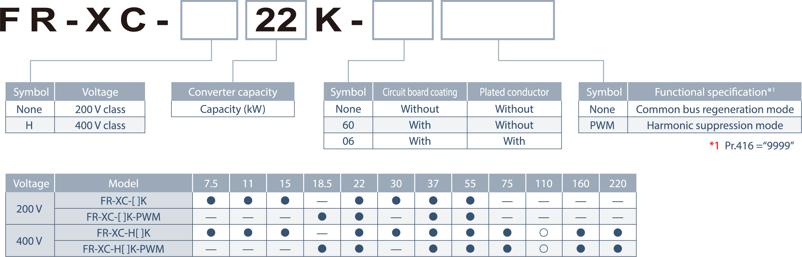
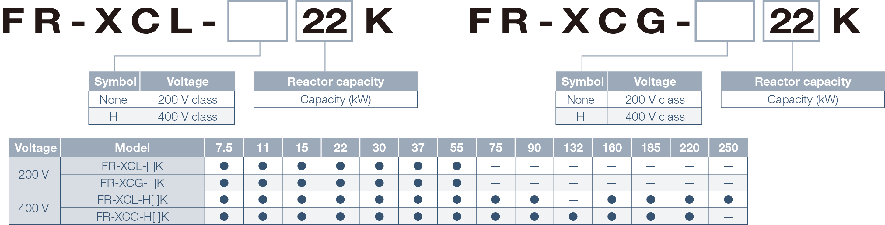
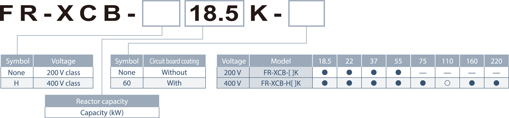
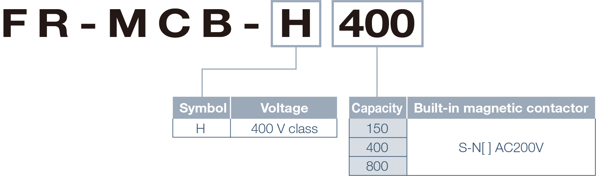
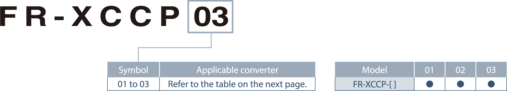
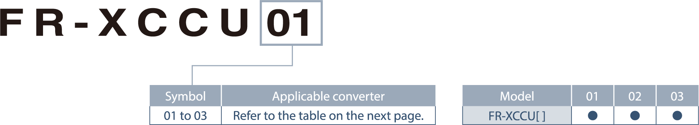

Inverters-FREQROL-XC Series Konfigurasi model

●: Dirilis, ◯: Akan dirilis, ─: Tidak berlaku
Spesifikasi model yang akan dirilis dapat berubah tanpa pemberitahuan sebelumnya
Model konverter regenerasi multifungsi

Model reaktor mandiri khusus (opsi)
Reaktor mandiri untuk digunakan dengan konverter FR-XC dalam mode regenerasi bus umum.
Reaktor mandiri untuk digunakan dengan konverter FR-XC dalam mode regenerasi daya 2.

Model reaktor tipe kotak khusus (opsi)
Reaktor tipe kotak mandiri untuk digunakan dengan konverter FR-XC dalam mode penekanan harmonik.

Model kotak kontaktor khusus (opsi)
Kotak kontaktor khusus yang digunakan untuk koordinasi dengan sirkuit pengisian daya.

Alat pemasangan konverter untuk model penutup (opsi)
Alat pemasangan konverter seri FR-XC dalam penutup.

Model attachment (opsi) yang kompatibel dengan IP20
Sebuah attachment untuk mencapai struktur pelindung yang sesuai dengan IP20 dari konverter seri FR-XC.
